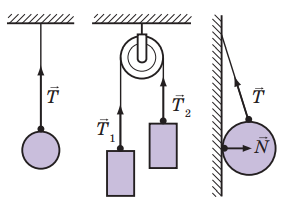

Закон Гука
Наукове дослідження процесів розтягування та стискання тіл розпочав у XVII ст. Роберт Гук . Результатом роботи вченого став закон, який згодом отримав назву закон Гука: У разі малих пружних деформацій розтягнення або стиснення сила пружності прямо пропорційна видовженню тіла і завжди намагається повернути тіло в недеформований стан: